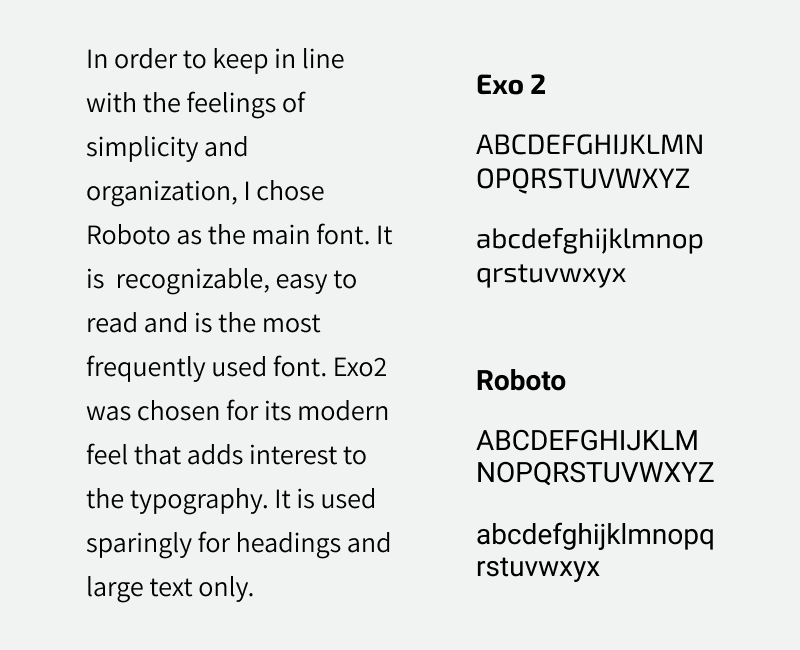
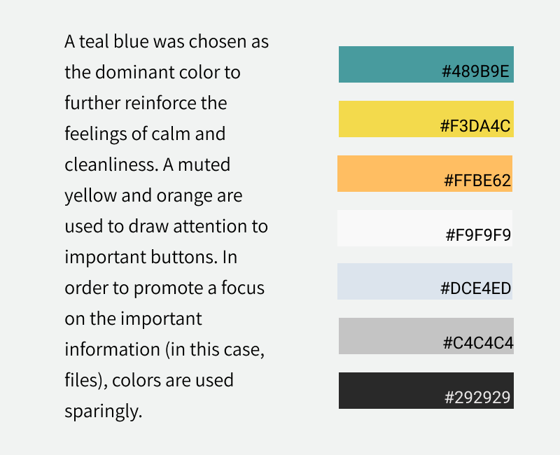
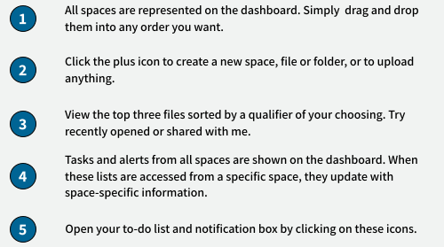
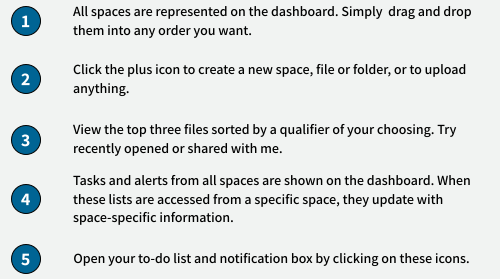
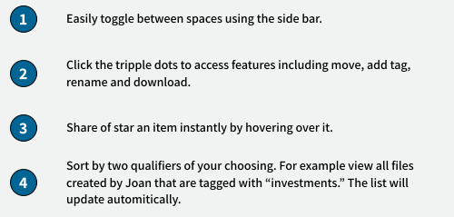
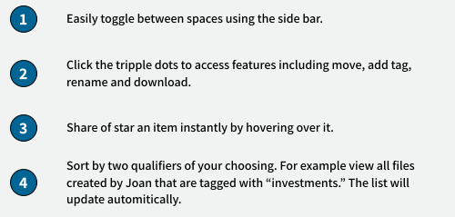

BrainSpace
This was my first large scale project at Bloc. BrainSpace is a Saas cloud storage app that presents a new way to organize and sort files and tasks.
View Prototype-
Roles
Market Research
User Research
UX Design
Visual Design
Brand Identity
-
Deliverables
Competitive Analysis
User Surveys
User Personas
User Stories and Flows
Wireframes
Style Guide
Functionality Testing and Results Analysis
High Fidelity Prototypes
-
Tools
Figma
Sketch
InVision
Usability Hub
Maze
The Problem
Humans are being inundated by a massive amount of information that they want to organize and store for future use. Even though cloud storage is not a new concept and multiple big name players have already accessed the market, users are frustrated by the lack of organizational freedom and want to be able to locate their files in a way that feels more intuitive.
The Solution
Through comprehensive market analysis, user research, and user testing, I created BrainSpace. BrainSpace aims to solve the problem of digital disorganization by offering multiple layers of organization, customizable sort options, and lists that elevate this cloud storage service to an organizer, prioritizer, and collaboration tool that can handle anything.
User Research
I began my research by posting a survey to multiple media platforms and sending it out to email contacts. My aim was to understand what users were looking for in a cloud storage application, how they utilized these types of applications, and what their main frustrations were. The data from the preliminary survey, suggest that most people are satisfied with their cloud storage service of choice with the leaders being Google, Dropbox and iCloud. However, there are some dissatisfied customers and some areas that happy customers would like to see improved. The stand out pain area for users was the organizational strategy, so a follow up survey was conducted to narrow in on a few core organizational features users could benefit from.


Based on these findings, I decided to prioritize organizational strategies and customization. It was interesting to see a breakdown of which features users take advantage of with their current cloud storage service. Only half of users use it to create content while only about a third of users use it to collaborate. There is an opportunity here for a cloud storage service that makes these two features really stand out from the competition. However, since those features are not currently being used as much as storage and sharing, I focused on storage and sharing for the MVP. It is vital to ensure minimum expectations are met before attempting to change consumer habits.
Competitive Analysis
I conducted a competitive analysis of three cloud/online storage platforms: two, Google Drive and Dropbox, are leaders in the field, while SugarSync is less-known.
Dropbox is another well-known leader that prides itself on collaboration and access from any device. Similar to Google however, the dashboard leaves much to be desired in terms of organizing and finding files.
Google is a well-known leader in the cloud storage space and excels in the simplicity of use. The dashboard however, can be difficult to manage with its limited file sorting options, minimal collaboration features, and satellite apps that don’t consistently integrate.
SugarSync holds its strength in file storage that is organized in the same way as your desktop. Unfortunately, it is expensive compared to other apps and it suffers with the editing, collaboration, and creation features.
Dashboard Analysis
Google Drive
Dropbox

SugarSync

In addition to the insights gained from the competitive analysis outlined above, there were some interesting things to be learned by examining the dashboards of the three sites.
1) Layout: First, there are some obvious trending dashboard layouts. All three sites examined featured a side panel with top bar.
2) List view: All three also had a listview which is consistent with what I found during the user research in that users prefer a listview to an icon view. Interestingly, Google Drive incorporates both views by adding icons/previews of 4 “quick access files” above the list view.
3) Search bar: All three had a prominent search bar.
4) Logo: All three had their logo in the top left corner, taking up minimal space.
5) File organization: All three provide a small preset amount of information about each file such as owner, last modified, last opened, or size. The most organizational influence the user has over this is to reverse the order on the owner or the name of the file.
User Personas
After gaining a broad understanding of users’ prevailing needs and frustrations, I conducted a few interviews in order to dig deeper into their experience. I distilled what I learned from my user surveys and from my interviews into two representative personas.
Regina
Management Consultant and Mother
Age: 47 / Location: Austin, TX / Use: weekly

Bio
Regina leads a busy life as a management consultant, a mother, an avid woodworker, and an aspiring business owner. She uses different services in order to keep her work files, her inspirations and her family matters separate. She doesn’t like switching between platforms and would rather keep everything in one place but has gotten frustrated by limited organizational features.
Goals
Easily upload, organize and store content.
Free storage with automatic backups.
Separation between work and personal content.
Frustrations
Doesn’t like having stuff in so many places.
Difficulty sharing, organizing and creating content.
“I have tons of things to keep track of between work, the kids and my personal interests and it’s spread all over the place. I’d like to organize it all in one spot.”
Kent
Biologist, Student, Surfer
Age: 29 / Location: Portland, OR / Use: daily

Bio
Kent has been comfortable doing lab work for many years and is now going back to school to learn some new skills. He’s nervous, yet excited and is trying to keep all his documents organized. He needs separate spaces for his work and school documents as well as a way to organize them as he sees fit. He feels the current solutions are too ridged in terms of organizational features.
Goals
Organize content without limitations.
Collaborate on files through video/audio/text. Set reminders and to-do lists for specific content.
Frustrations
Difficulty of organization.
Apps don’t sync effectively nor efficiently between devices.
“I am always moving between work, home and coffee shops and need to be able to see, edit and organize my content immediately.”
Three Solutions
Based on these findings, I developed three solutions that could enhance a user’s experience when using a cloud storage service.

Multiple layers of organization
Implementation
Completely separate spaces for different activities.
Function/Value
Users can focus on one project while files related to others are out of the way.
Customizable sort options
Implementation
Users can sort files by two qualifiers of their choosing.
Function/Value
Allows users to organize and view content in a way that makes sense to them.

Notification view and to-do list
Implementation
Master list that updates with space-relevant information.
Function/Value
Serves as an organizer and encourages users to store everything in one place.
User Flows
User flows were created in order to define the true scope of what needed to be included in the first testable version of the application. This detailed information architecture served as a roadmap for the creation of this site.
View user flows
Branding and Identity: Logo
As part of my work for developing this application, I was tasked with generating a name and designing a logo. The goal was to create something that felt sleek, intelligent, powerful and professional. Eventually, I settled on BrainSpace because this app is for all of the things occupying the spaces of your brain. The app keeps everything organized but separate and hopefully promotes a feeling of peace that everything is all in one place without being overwhelming.

Typography
Color
Wireframes
I created wireframes using Figma and uploaded them to Invision so I could begin user testing. Testing was conducted both in person and remotely. Users were able to complete all three basic tasks without trouble indicating that I was off to a good start. Nonetheless, I gained some very valuable insight into how features should be changed and how I should conduct these tests in the future.
Main Takeaways
-
Word choice is very important. The button should read “upload” instead of “done.”
-
There should be confirmation that a file was uploaded.
-
Having more clarifying information would be useful. For example, the window should say which file you are trying to upload or move.

Visual Design: Landing Page
The landing page underwent multiple iterations as I worked on developing my design eye. The final landing page consists of only the necessary information, a few colors with the dominant blue carrying through to the page, and relevant photos that catch but do not distract the eye. Multiple preference tests were conducted using Usability Hub in order to land at this design.
Iterations


Final Design

Visual Design: Dashboard View with To-Do List and Notification List Open
The process of designing the dashboard screens and testing their functionality went hand in hand as the design evolved and as I learned more about how users interact with a website.
Initial Design

The final dashboard design has a simplified side panel and provides much cleaner views of the spaces. Users can see useful, higher-level information about each space including tags, when it was created and by who. There is a simplified custom view, allowing users to view the top three files filtered however they choose including recently modified, recently opened, created by, tagged with and starred. The notifications and to-do list are easily accessed and update based on which space (if any) is being viewed.
 

Visual Design: File view inside space with sort options window open
Initial Design

The updated design is cleaner-looking, easier to use and provides more information. The decision to present the files in a list format and the decision include “star” and “share” as the two action items available in a hover state, were based on user surveys and testing. In order to address the organization complaints of cloud storage users, I decided to incorporate two sorting buttons that allow users to view files based on different qualifiers. A user can decide for example, that they want to view all files that were created by a specific person that have a certain tag associated with them. Once this selection has been made, the files will reorder according to these specifications.
 

Conclusions
What worked?
I was able to design a product that was mostly intuitive, albeit a little messy, right from the start as evidenced by user tests. This allowed me to focus my attention on the design and simplifying my product further into something that was even more easy to use. The biggest lesson learned here was to start simple and expand from there.
What didn't work?
My biggest hurdle was the visual design of the website. This project underwent quite a few revisions. Keeping in line with what I mentioned above, I am realizing the importance of keeping things simple and clean. For future projects, I will spend more time looking at the competition and gathering inspiration so I have a clearer design direction.
Final thoughts.
I am proud of the solutions I came up with in order to tackle the problem of virtual disorganization however, the design could be improved upon. This project showed me how fun and valuable testing is at every stage of the process. I am excited to take these lessons and apply them to my next project!